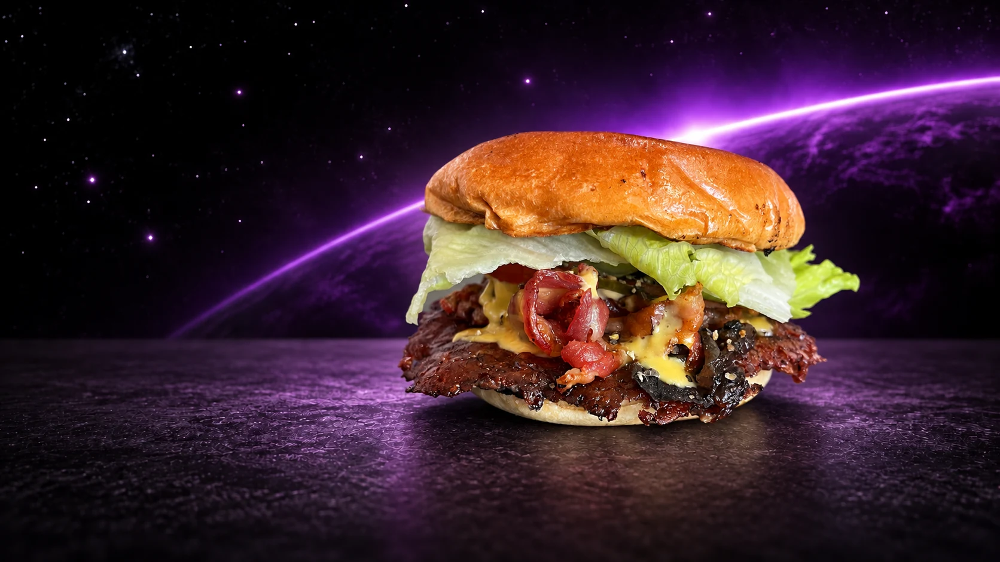
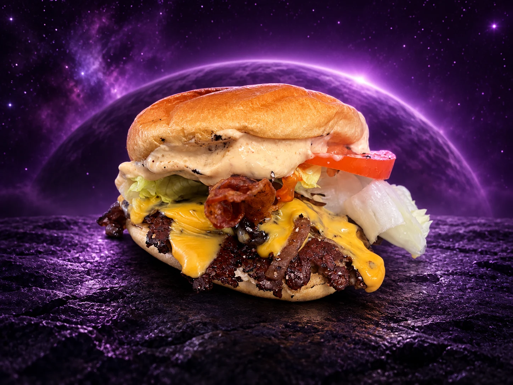
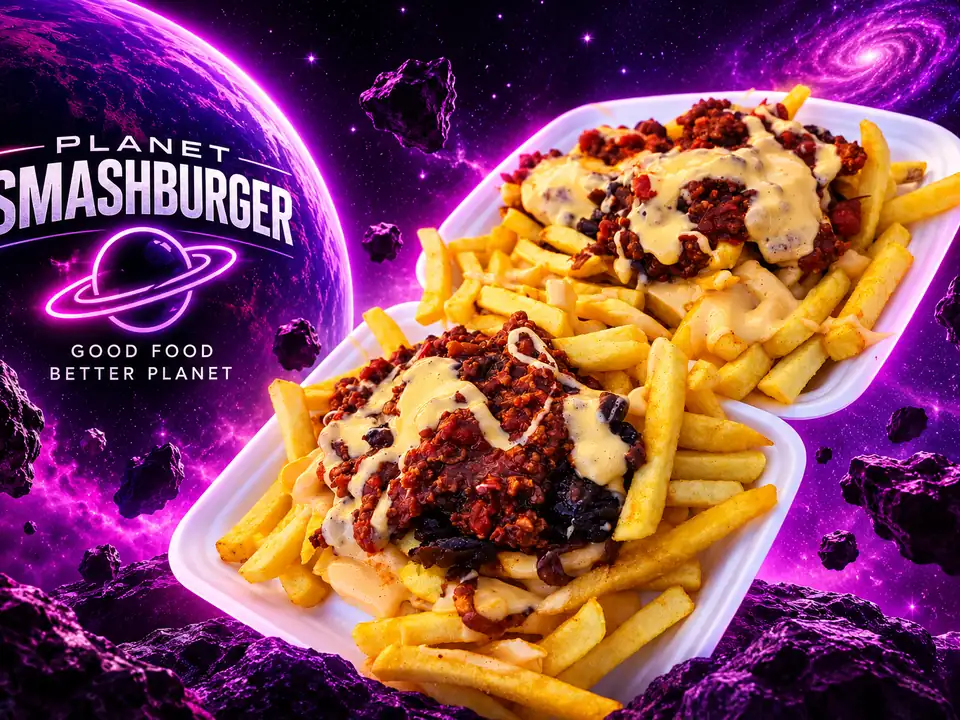
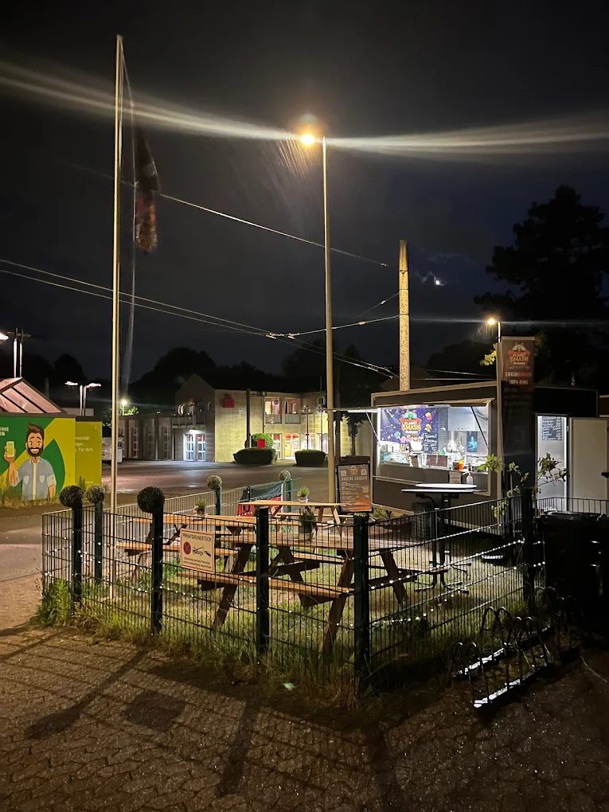

★★★★★
„einer der besten Smashburger die ich gegessen habe“

SOLINGEN-AUFDERHÖHE / PLANET SMASHBURGER
Auf diesem Planeten bist du willkommen.
STIMMEN VON DER ERDE
„einer der besten Smashburger die ich gegessen habe“
„Alter war das ein geiler Burger. Da war echt Liebe drin.“
„Ich kann Planet Smashburger nur empfehlen.“
01 / GESCHMACK MIT ANZIEHUNGSKRAFT
Burger im Mittelpunkt.
Pommes an deiner Seite.
Willkommen auf Planet Smashburger.



DEIN LANDEPLATZ IN SOLINGEN.03 / SEE YOU ON THE PLANET.
Di–Sa 16–22 Uhr · So 14–22 Uhr
Ruf vorher an oder stell dir deine Bestellung in der Speisekarte zusammen und schick sie per WhatsApp. Nach unserer Bestätigung wird sie zur vereinbarten Abholzeit vorbereitet.
Anrufe während der Öffnungszeiten05 / OFFENER FUNKKANAL
Keine Anmeldung. Kein Account. Schick uns einfach einen kurzen Funkspruch – und lies, was andere Erdlinge hinterlassen haben.
Suche Signale im Orbit …
06 / PLANET ARCADE
Steuere das Planet-Smashburger-Logo, feuere Burger in den Orbit und halte die UFOs auf Abstand.
PC: Linke Maustaste gedrückt halten = Maussteuerung + Dauerfeuer · loslassen = Feuer aus · rechte Maustaste = Bombe · alternativ ← → oder A / D
HANDY: Finger auf das Logo legen und nach links/rechts ziehen · solange du es festhältst, feuert es automatisch · die Bombe kann gleichzeitig mit einem zweiten Finger ausgelöst werden
07 / PLANET CONTROL STATION
Interplanetare Systemdaten. Für Erdlinge freigegeben.
Verbindung zur Bodenstation wird hergestellt.
Berechne nächsten Start…
Gravitation auf Smash-Niveau.
🛸 SEKTOR 51 // AKTIV
Unbekanntes Objekt kreist über Planet Smashburger.
Verschlüsselte Nachricht empfangsbereit.
Hinweis aus dem Kontrollraum: Manche Systeme reagieren auf wiederholten Kontakt.